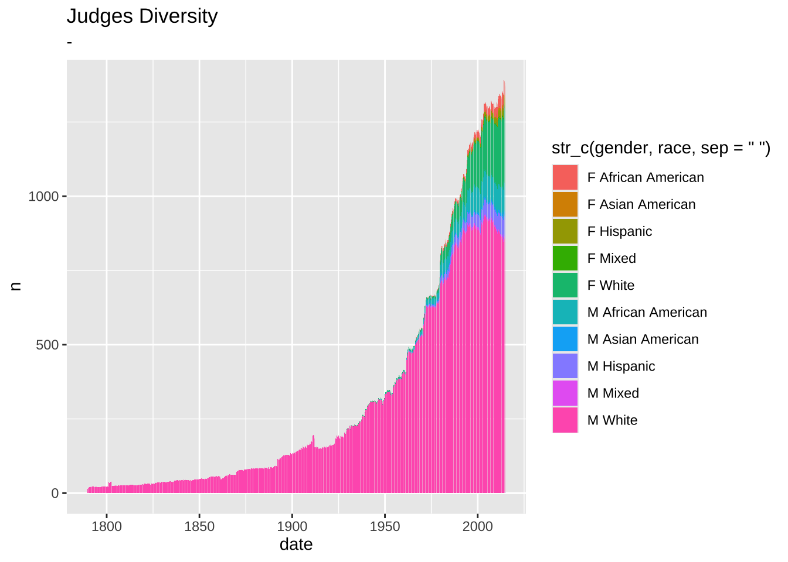
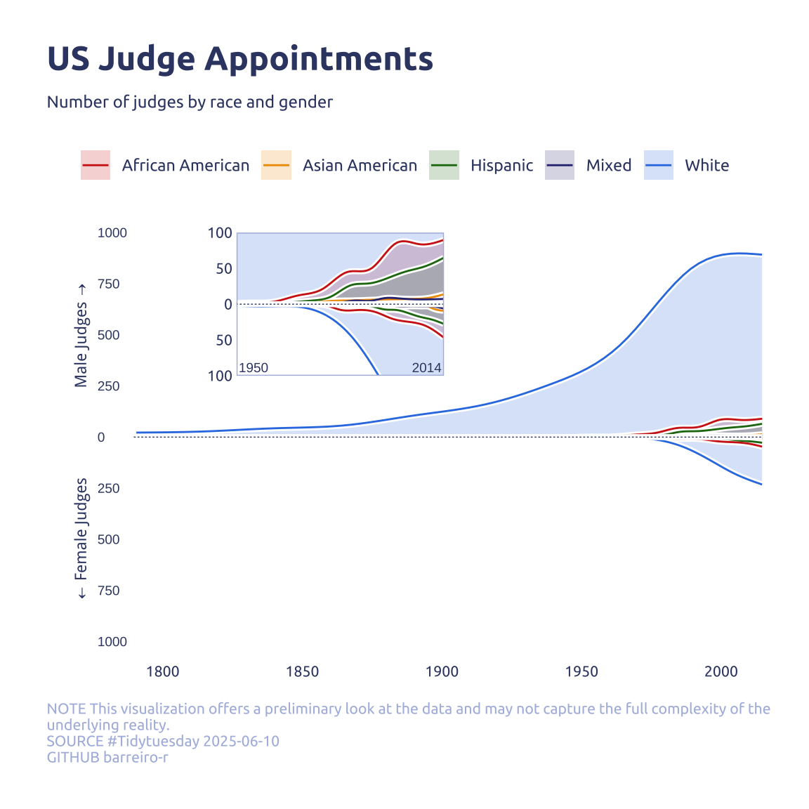

library(tidyverse)
library(glue)
library(scales)
library(showtext)
library(ggtext)
library(shadowtext)
font_add_google("Ubuntu", "Ubuntu", regular.wt = 400, bold.wt = 700)
showtext_auto()
showtext_opts(dpi = 300)About the Data
Note
This week we’re exploring U. S. judge data from the {historydata} R package! This package is looking for a new maintainer. If you are interested in this dataset (and other datasets of historical information), please consider volunteering! Check out the rOpenSci Blog What Does It Mean to Maintain a Package? by Maëlle Salmon for more information.
Note: The package help for this dataset links to a particular PDF with some information about judgeships, but the actual source data can be found at Biographical Directory of Article III Federal Judges: Export on the Federal Judicial Center website.
This dataset contains information about the appointments and careers of all federal judges in United States history since 1789. It includes judges who “judges presidentially appointed during good behavior who have served since 1789 on the U.S. District Courts, the U.S. Courts of Appeals, the Supreme Court of the United States, the former U.S. Circuit Courts, and the federal judiciary’s courts of special jurisdiction.” Some of the unnecessary information from the source has been excluded.
1 Initializing
1.1 Load libraries
1.2 Set theme
theme_set(
theme_minimal() +
theme(
# axis.line.x.bottom = element_line(color = '#474747', linewidth = .3),
# axis.ticks.x= element_line(color = '#474747', linewidth = .3),
# axis.line.y.left = element_line(color = '#474747', linewidth = .3),
# axis.ticks.y= element_line(color = '#474747', linewidth = .3),
# # panel.grid = element_line(linewidth = .3, color = 'grey90'),
panel.grid.major = element_blank(),
panel.grid.minor = element_blank(),
axis.ticks.length = unit(-0.15, "cm"),
plot.background = element_blank(),
plot.title.position = "plot",
plot.title = element_text(family = "Ubuntu", size = 18, face = 'bold'),
plot.caption = element_text(
size = 8,
color = '#aebae0',
margin = margin(20, 0, 0, 0),
hjust = 0
),
plot.subtitle = element_text(
size = 9,
lineheight = 1.15,
margin = margin(5, 0, 15, 0)
),
axis.title.x = element_markdown(
family = "Ubuntu",
hjust = .5,
size = 8,
color = "#374571"
),
axis.title.y = element_markdown(
family = "Ubuntu",
hjust = .5,
size = 8,
color = "#374571"
),
axis.text = element_text(
family = "Ubuntu",
hjust = .5,
size = 8,
color = "#374571"
),
legend.position = "top",
text = element_text(family = "Ubuntu", color = "#374571"),
plot.margin = margin(25, 25, 25, 25)
)
)1.3 Load this week’s data
judges_appointments <- readr::read_csv('https://raw.githubusercontent.com/rfordatascience/tidytuesday/main/data/2025/2025-06-10/judges_appointments.csv')
judges_people <- readr::read_csv('https://raw.githubusercontent.com/rfordatascience/tidytuesday/main/data/2025/2025-06-10/judges_people.csv')2 Data analysis
How diverse is the judges?
judges_people |> count(gender, race) |> pivot_wider(names_from = gender, values_from = n)# A tibble: 12 × 3
race F M
<chr> <int> <int>
1 African Am./Hispanic 1 1
2 African American 51 150
3 American Indian 1 2
4 Asian American 9 22
5 Hispanic 29 87
6 Hispanic/Asian Am. 1 NA
7 White 293 2871
8 White/Asian Am. 1 NA
9 <NA> 3 6
10 Hispanic/White NA 1
11 Pac. Isl./Asian Am. NA 2
12 Pac. Isl./White NA 1main_r <- c("African American", "Asian American", "Hispanic", "White")There are three main race classifications: African American, Asian American, Hispanic and White; We can classify other as “Mixed”, maybe.
How complete is the nomination and termination date?
judges_appointments |> count(is.na(judge_id), is.na(nomination_date), is.na(termination_date))# A tibble: 4 × 4
`is.na(judge_id)` `is.na(nomination_date)` `is.na(termination_date)` n
<lgl> <lgl> <lgl> <int>
1 FALSE FALSE FALSE 2675
2 FALSE FALSE TRUE 1367
3 FALSE TRUE FALSE 153
4 FALSE TRUE TRUE 7Are NAs in termination_date judges with active appointments or is it missing data?
missing_termination_min <-
judges_appointments |>
filter(is.na(termination_date)) |>
filter(!is.na(nomination_date)) |>
pull(nomination_date) |>
as.Date(format = "%m/%d/%Y") |>
min()
all_time_min <-
judges_appointments |>
filter(!is.na(nomination_date)) |>
pull(nomination_date) |>
as.Date(format = "%m/%d/%Y") |>
min()The all time earliest nomination is 1789-09-24 and the earliest missing termination date is 1962-06-23. So it would make sense it is still active appointments.
3 Transform Data for Plotting
4 Time to plot!
4.1 Before
data2plot |>
ggplot(aes(x = date, y = n)) +
geom_col(aes(fill = str_c(gender, race, sep = ' '))) +
theme_gray() +
labs(
title = 'Judges Diversity',
subtitle = '-')
my_color_pallet <- c(
"African American" = "#CF251A",
"Asian American" = "#F09A00",
"Hispanic" = "#1F7611",
"White" = "#337EE4",
"Mixed" = "#303381"
)
data2plot2 <-
data2plot |>
mutate(n = if_else(gender == 'F', -n, n)) |>
group_by(gender, race) |>
arrange(gender, race, date) |>
mutate(
mean_n = zoo::rollmeanr(n, k = 12, fill = NA) # k=3 for 3 periods
) |>
ungroup()
p1 <-
data2plot2 |>
ggplot(aes(x = date, y = mean_n)) +
annotate(
geom = 'text',
x = as.Date('1770-09-01'),
y = 500,
label = 'Male Judges →',
hjust = 0.5,
vjust = 0.5,
size = 3,
color = "#374571",
angle = 90,
) +
annotate(
geom = 'text',
x = as.Date('1770-09-01'),
y = -500,
label = '← Female Judges',
hjust = 0.5,
vjust = 0.5,
size = 3,
color = "#374571",
angle = 90,
) +
geom_text(
data = tibble(guide_value = seq(-1000, 1000, 250)),
x = as.Date('1776-09-01'),
aes(label = abs(guide_value), y = guide_value),
hjust = 0,
vjust = 0.5,
size = 2.5,
color = "#374571"
) +
stat_smooth(
aes(fill = race, group = str_c(race, gender)),
se = FALSE,
geom = 'area',
alpha = .2
) +
geom_smooth(
aes(group = str_c(race, gender)),
se = FALSE,
color = 'white',
span = .2,
linewidth = 1.5
) +
geom_smooth(
aes(color = race, group = str_c(race, gender)),
se = FALSE,
span = .2,
linewidth = 0.5
) +
scale_x_date(expand = c(0.05, 0, 0, 0)) +
scale_y_continuous(expand = c(0.05, 0, 0.05, 0), limits = c(-1000, 1000)) +
annotate(
geom = 'segment',
y = 0,
x = min(data2plot2$date),
xend = max(data2plot2$date),
color = 'white',
linewidth = 1.5
) +
annotate(
geom = 'segment',
y = 0,
x = min(data2plot2$date),
xend = max(data2plot2$date),
color = '#374571',
linewidth = 0.25,
linetype = '11'
) +
# theme(legend.position = c(0.05, 0.99), legend.justification = c(0, 1)) +
scale_color_manual(values = my_color_pallet) +
scale_fill_manual(values = my_color_pallet) +
labs(x = NULL, y = "Number of judges", color = NULL, fill = NULL)
p2 <- p1 +
coord_cartesian(
expand = FALSE,
ylim = c(-100, 100),
xlim = c(as.Date("1950-01-01"), as.Date("2014-10-01"))
) +
theme(
plot.margin = margin(0, 0, 0, 0),
legend.position = 'none',
panel.border = element_rect(color = '#aebae0', linewidth = .5, fill = NA)
) +
annotate(
geom = 'text',
label = '2014',
x = as.Date("2014-01-01"),
y = -95,
hjust = 1,
vjust = 0,
size = 2.5,
color = "#374571"
) +
annotate(
geom = 'text',
label = '1950',
x = as.Date("1950-09-01"),
y = -95,
hjust = 0,
vjust = 0,
size = 2.5,
color = "#374571"
) +
labs(x = NULL, y = NULL) +
theme(axis.text.x = element_blank()) +
scale_y_continuous(label = abs)
p1 +
theme(axis.text.y = element_blank(), axis.title.y = element_blank()) +
annotation_custom(
xmin = as.Date("1825-01-01"),
xmax = as.Date("1900-10-01"),
ymin = 300,
ymax = 1000,
grob = ggplotGrob(p2)
) +
labs(
title = "US Judge Appointments",
subtitle = "Number of judges by race and gender",
caption = str_wrap("NOTE This visualization offers a preliminary look at the data and may not capture the full complexity of the underlying reality.@SOURCE #Tidytuesday 2025-06-10@GITHUB barreiro-r", width = 110) |> str_replace_all("@","\n")
)
Note
I tryed to use ggforce::zoom_panel() and {ggmagnify} but both didn’t work.